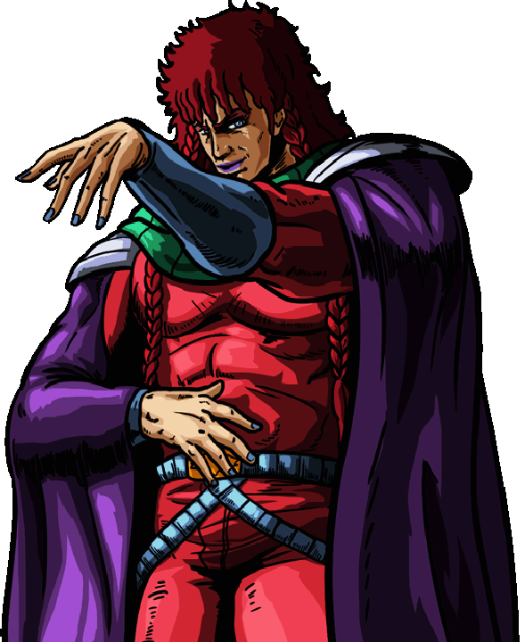

Rappresenta la Stella dell'Incanto (Yōsei), destinata però a essere ricordata come la Stella del Tradimento. Maestro del Nanto Kōkaku Ken, il suo stile sfrutta spostamenti d'aria per creare potenti onde di vuoto capaci di fare a pezzi i nemici a distanza. Narcisista, crudele e calcolatore, è ossessionato dalla propria bellezza e nutre una profonda invidia verso Rei.